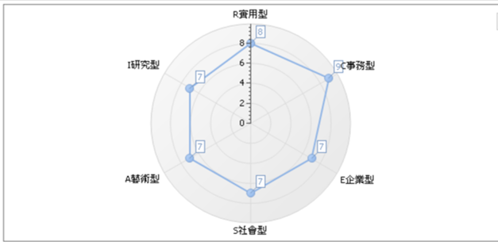
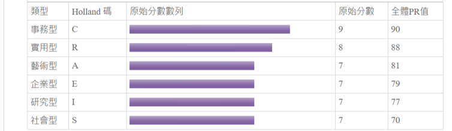

Who I am
我是陳羿汶，就讀靜宜大學資訊管理學系二年級，因為對電腦有興趣，所以學習了多種程式語言。我是一個樂觀開朗的人，會將我的快樂傳遞給大家。
歡迎來到我的個人網頁！

C事務型、R 實用型
 事務型的人是典型的“文書者”(Organizer)，性格特徵為：規律、精確、有條理、堅毅、謹慎、有效率、穩重、愛整潔、講求實際、保守、服從指示。 在職業性格傾向上，事務型的人個性謹慎，做事講求規矩與精確，樂於處理資料、計算及文書，喜歡在具有明確規範的環境下工作，能夠按部就班、有效率、精確仔細地完成主管交辦的工作。事務型的人的價值觀是較傳統的，會選擇社會所認同的工作及價值觀行事，生活觀是講求踏實與實際，不喜歡改變或創新，也不喜歡冒險或領導。在問題解決策略上，會選擇跟隨既定的法則、常規和程序行事，仰仗權威的建議和諮詢、尋求實用的解決方案，能夠制定有次序且仔細的計畫解決問題。事務型的人喜歡從事規律與有條理的工作，其典型職業為：會計師、精算師、銀行人員、行政人員、出納、速記人員、簿記人員、場記、電腦系統分析師、資產管理專員等。
實用型的人是典型的實作者(Doer)，性格特徵為情緒穩定、坦誠直率、獨立實際、謙虛有禮、穩健節儉。 在職業性格傾向上，喜歡講求實際、動手操作、按部就班完成實際用途物品等技術性、體力性的工作，例如操作機械、工具、運動設備或養育動物等工作，寧願實際動手作而不喜歡多言，比較喜歡獨立做事，避免主觀性、學術性、富想像力或人際互動的工作類型。實用型的人的價值觀是重視傳統的，將雄心與自我控制視為重要的價值觀，講求實事求是而非寬容的態度，形成較封閉的價值觀系統。在問題解決策略上，偏好於具體、實際和有架構的解決方案或策略，而非學術性、富想像力或人際互動的行動。實用型適合從事技術性、體力性之典型職業例如：機械維護師、電器工程人員、太空人、塔台工程師、飛行員、廚師、工匠、農業工作、汽車修護員、警察、消防員等。